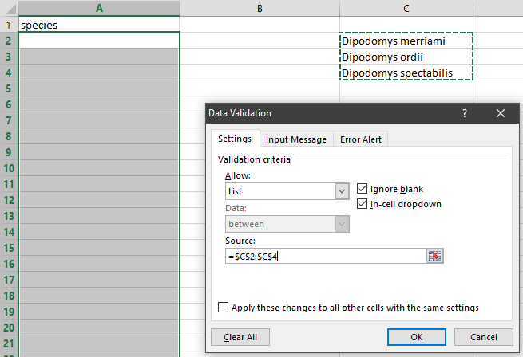

Quality control
Data Organization in Spreadsheets for Ecologists
Overview
- Teaching: 20 min
- Exercises: 0 min
- Questions
- How can we carry out basic quality control and quality assurance in spreadsheets?
- Objectives
- Apply quality control techniques to identify errors in spreadsheets and limit incorrect data entry.
When you have a well-structured data table, you can use several simple techniques within your spreadsheet to ensure the data you enter is free of errors. These approaches include techniques that are implemented prior to entering data (quality assurance) and techniques that are used after entering data to check for errors (quality control).
Quality Assurance
Quality assurance stops bad data from ever being entered by checking to see if values are valid during data entry. For example, if research is being conducted at sites A, B, and C, then the value V (which is right next to B on the keyboard) should never be entered. Likewise if one of the kinds of data being collected is a count, only integers greater than or equal to zero should be allowed.
To control the kind of data entered into a spreadsheet we use Data Validation (Excel) or Validity (Libre Office Calc), to set the values that can be entered in each data column.
Select the cells or column you want to validate
On the
Datatab selectData Validation

- In the
Allowbox select the kind of data that should be in the column. Options include whole numbers, decimals, lists of items, dates, and other values.

- After selecting an item enter any additional details. For example, if you’ve chosen a list of values, enter a comma-delimited or semi-colon list of allowable values in the
Sourcebox.
Let’s try this out by setting the plot column in our spreadsheet to only allow plot values that are integers between 1 and 24.
- Select the 1plot_id1 column
- On the
Datatab selectData Validation - In the
Allowbox selectWhole number - Set the minimum and maximum values to 1 and 24.

Now let’s try entering a new value in the plot column that isn’t a valid plot. The spreadsheet stops us from entering the wrong value and asks us if we would like to try again.
You can also customize the resulting message to be more informative by entering your own message in the Input Message tab

or allow invalid data to result in a warning rather than an error by modifying the Style option on the Error Alert tab.

Quality assurance can make data entry easier as well as more robust. For example, if you use a list of options to restrict data entry, the spreadsheet will provide you with a drop-downlist of the available items. So, instead of trying to remember how to spell Dipodomys spectabilis, you can select the right option from the list.

Quality Control
Tip: Before doing any quality control operations, save your original file with the formulas and a name indicating it is the original data. Create a separate file with appropriate naming and versioning, and ensure your data is stored as values and not as formulas. Because formulas refer to other cells, and you may be moving cells around, you may compromise the integrity of your data if you do not take this step!
readMe (README) files: As you start manipulating your data files, create a readMe document / text file to keep track of your files and document your manipulations so that they may be easily understood and replicated, either by your future self or by an independent researcher. Your readMe file should document all of the files in your data set (including documentation), describe their content and format, and lay out the organizing principles of folders and subfolders. For each of the separate files listed, it is a good idea to document the manipulations or analyses that were carried out on those data. Cornell University’s Research Data Management Service Group provides detailed guidelines for how to write a good readMe file, along with an adaptable template.
Sorting
Bad values often sort to the bottom or top of the column. For example, if your data should be numeric, then alphabetical and null data will group at the ends of the sorted data. Sort your data by each field, one at a time. Scan through each column, but pay the most attention to the top and the bottom of a column. If your dataset is well-structured and does not contain formulas, sorting should never affect the integrity of your dataset.
Remember to expand your sort in order to prevent data corruption. Expanding your sort ensures that the all the data in one row move together instead of only sorting a single column in isolation. Sorting by only a single column will scramble your data - a single row will no longer represent an individual observation.
Exercise
We’ve combined all of the tables from the messy data into a single table in a single tab. Download this semi-cleaned data file to your computer: survey_sorting_exercise
Once downloaded, sort the Weight_grams column in your spreadsheet program from Largest to Smallest.
What do you notice?
Conditional formatting
Conditional formatting basically can do something like color code your values by some criteria or lowest to highest. This makes it easy to scan your data for outliers.
Conditional formatting should be used with caution, but it can be a great way to flag inconsistent values when entering data.
Exercise
- Make sure the Weight_grams column is highlighted.
- In the main Excel menu bar, click
Home>Conditional Formatting...choose a formatting rule. - Apply any
2-Color Scaleformatting rule. - Now we can scan through and different colors will stand out. Do you notice any strange values?
It is nice to be able to do these scans in spreadsheets, but we also can do these checks in a programming language like R, or in OpenRefine or SQL.
Key Points
- Always copy your original spreadsheet file and work with a copy so you don’t affect the raw data.
- Use data validation to prevent accidentally entering invalid data.
- Use sorting to check for invalid data.
- Use conditional formatting (cautiously) to check for invalid data.
Licensed under CC-BY 4.0 2018–2022 by The Carpentries
Licensed under CC-BY 4.0 2016–2018 by Data Carpentry